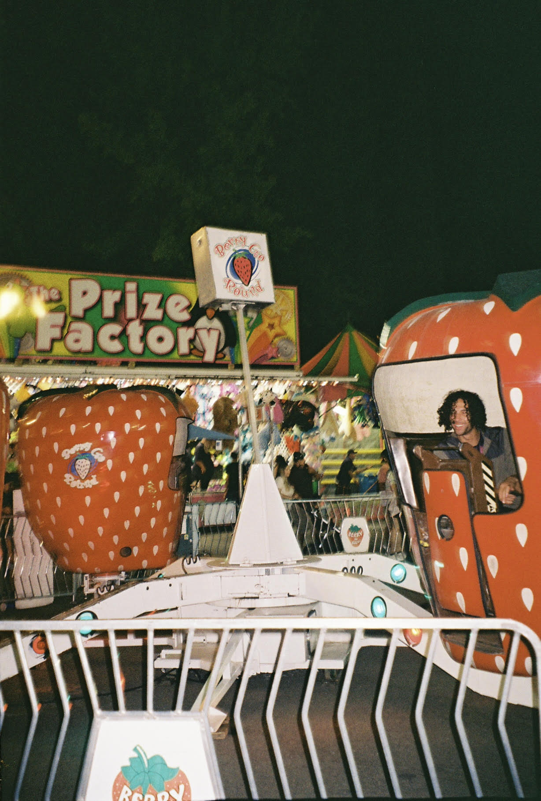

My name is Jaq. I am a re-entry student to UCSC, so, while I have spent some time here in Santa Cruz, I still feel very brand new. Most of my life I have been a theatre-maker, drawing inspiration from the world around as well as my own personal story. I am currently taking time to discover what drives me and what paths my academic journey will lead me to. I am a poet and poetry has given me a really honest way for me to express myself. I like to play a lot of single-player story based video games, I spend a lot of time endlessly scrolling, and I really value the time I get to spend with the people I love. Even if it's virtual.

Hi! My name is Mikayla I am a fourth year CRES major with a minor in film and digital media, I transferred her from Sacramento,CA. I really enjoy listening to music/going to concerts, watching films, and taking photos on my (currently broken) film camera. I am new to programming and want to get more comfortable with it so I can create my own website or find a way to upload my writing to a space of my own. This course has been a huge challenge for me. I spend a lot of time outside of the course trying to understand what I am learning because of this, getting comfortable with coding is a goal of mine for this term. I know the pay off will be worth it and I am looking forward to getting better.